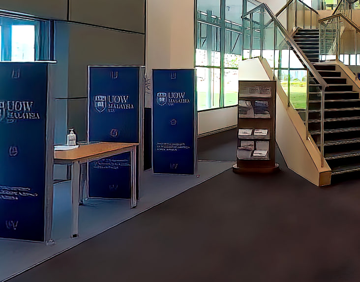
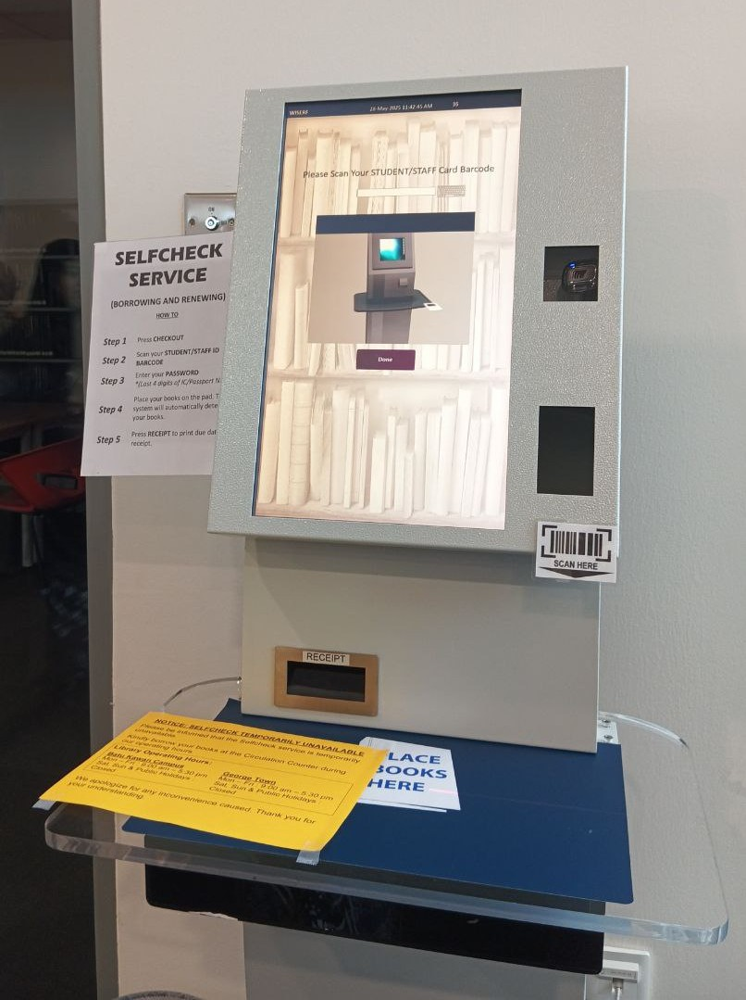
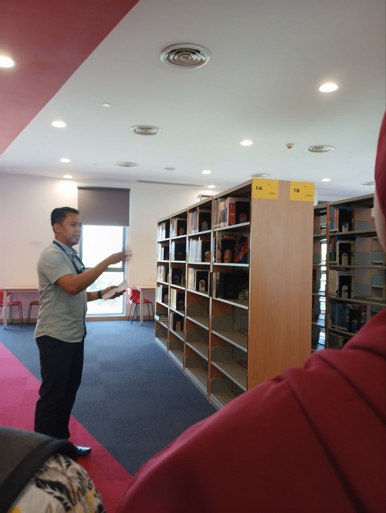
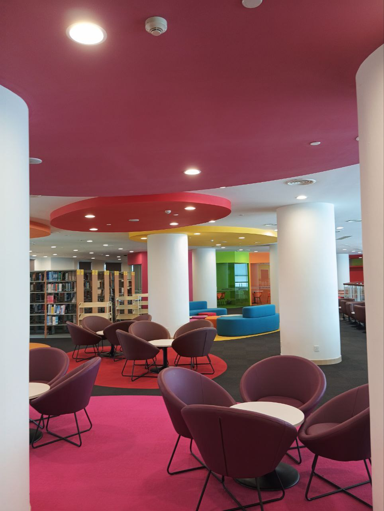
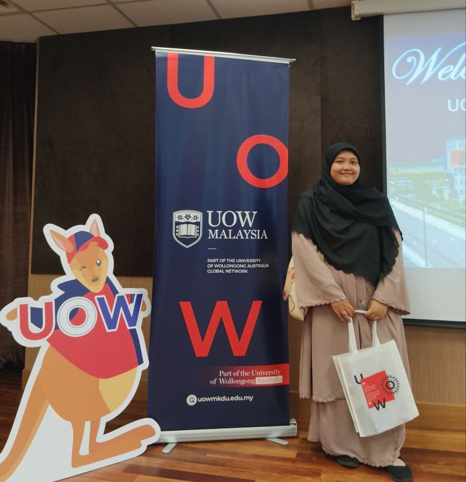

UOW Malaysia KDU Penang University College, Batu Kawan Campus
I visited this library with my classmates where we learned about material management, available technologies and access, as well as the digital management system which is user-friendly.




